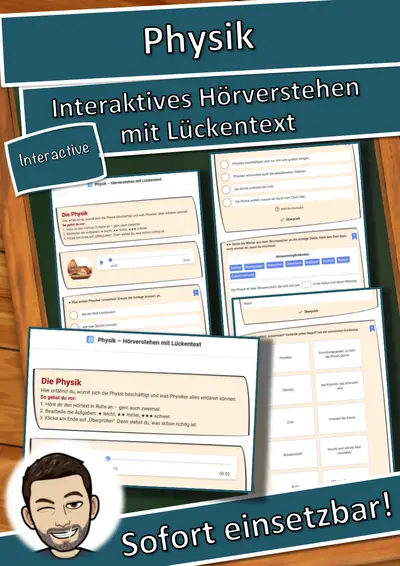

Die Physik-Werkstatt – Lesespurgeschichte mit Rätselaufgaben (Klasse 7)
Begib dich mit deiner Klasse auf eine spannende Lesespur durch die Physik-Werkstatt! Die Kinder begleiten Lena und Jonas und die Schülerin Pia – vom Hebel über Flaschenzug, schiefe Ebene, Zahnräder, Reibungs-Station und Federwaage bis zum Pendel und zur Seilwinde – und erforschen dabei ganz nebenbei Kräfte und einfache Maschinen. Am Ende jedes Abschnitts verrät ein Hinweis den nächsten Ort auf dem Übersichtsplan – nur wer richtig liest und mitdenkt, findet den Weg und sammelt alle geheimen Buchstaben zum Lösungswort.
Diese Lesespurgeschichte verbindet motivierendes, sinnentnehmendes Lesen mit echter naturwissenschaftlicher Kompetenz und schult zugleich das genaue Arbeiten. Das Material ist SOFORT EINSETZBAR und in DREI DIFFERENZIERUNGSSTUFEN (leicht ★ / mittel ★★ / schwer ★★★) angelegt, sodass alle Kinder einer Klasse am selben Thema arbeiten können.WICHTIG: Das komplette Material ist sowohl in FARBE als auch in SCHWARZ-WEISS enthalten – ideal zum Sparen von Druckkosten.DAS IST ENTHALTEN
- Lesespurgeschichte in 3 Niveaus (leicht, mittel, schwer)
- farbiger Übersichtsplan (Werkstattplan) als Suchkarte
- Hörverstehen mit QR-Code zur MP3 (Kinder hören selbstständig mit Kopfhörern)
- vier Aufträge auf dem Weg: ein Verbinde-Rätsel, ein Physik-Quiz, eine Prozent-Rechenaufgabe und ein Steckbrief
- Rätselseite (Wörter-Suchsel + Wissensfragen)
- Ausmalbild zum Thema (Physik-Szene)
- ausführliches Lösungsblatt für die Lehrkraft
- alles zusätzlich als komplette Schwarz-Weiß-VarianteSO FUNKTIONIERT DIE LESESPURDie Kinder lesen ab START, entnehmen dem Text einen Hinweis auf einen Ort, suchen ihn auf dem Plan und lesen beim dort abgebildeten Buchstaben weiter. Eingebaute Sackgassen dienen der Selbstkontrolle. Am Ende werden die gesammelten Buchstaben umgestellt und ergeben ein geheimes Lösungswort. (Die Lösungen sind selbstverständlich nur im Lösungsblatt für die Lehrkraft enthalten.)INHALTLICHER SCHWERPUNKTKräfte und einfache Maschinen: die Kraft und ihre Einheit Newton, der Hebel und das Hebelgesetz, Rolle und Flaschenzug, die schiefe Ebene, Zahnräder und Getriebe, die Reibung, die Federkraft und das Pendel sowie die Goldene Regel der Mechanik (Kraft sparen, aber nicht Arbeit). Das Material stellt die Zusammenhänge sachlich und faktenbasiert dar und macht Physik anschaulich erfahrbar.ABGEDECKTER LEHRPLAN (Klasse 7)
- Physik – Mechanik: Kraft und Kraftmessung (Newton), einfache Maschinen (Hebel, Rolle, Flaschenzug, schiefe Ebene, Zahnräder), Reibung, Federkraft, Pendel, Goldene Regel der Mechanik; Verbindung von Beobachtung und Erklärung.
- Deutsch – Lesen mit Texten und Medien umgehen: Lesestrategien anwenden, Texten gezielt Informationen entnehmen, sinnentnehmend und selektiv lesen; Selbstkontrolle und Lesemotivation durch die Lesespur; Zuhören: einem Sachhörtext konzentriert folgen und Wesentliches entnehmen (Hörverstehen mit MP3).
- Mathematik – Prozentrechnung im Sachzusammenhang (Kräfte, Kraftersparnis), Prozentwert berechnen und Ergebnisse deuten.
- Fächerübergreifend / Kompetenzen: naturwissenschaftliches Denken, selbstständiges Arbeiten, genaues Lesen und Prüfen, Konzentration und Ausdauer, kreatives Gestalten (Ausmalbild).
Geeignet für Freiarbeit, Stationenlernen, Vertretungsstunden, Wochenplan und Homeschooling. Klassenstufe 7 (differenziert einsetzbar auch in angrenzenden Jahrgangsstufen).
Ähnliche Materialien

Der Hebel – Prüfungstraining Physik (Klasse 8)

Kräfte – Prüfungstraining Physik (Klasse 8)

Hebel Lückentext mit Wortspeicher Hörverstehen und Suchsel

Physik Lückentext mit Wortspeicher Hörverstehen und Suchsel

Materialpaket Lesespurgeschichten Physik Klasse 7: 6 Lesespuren mit Rätselaufgaben, dreifach differenziert

Physik – Hörverstehen mit Lückentext (interaktiv)

Materialpaket Lesespurgeschichten Physik Klasse 5: 4 Lesespuren mit Rätselaufgaben, dreifach differenziert